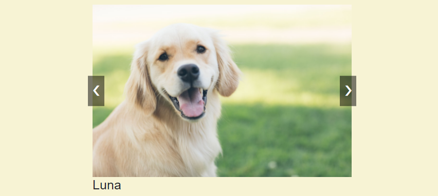
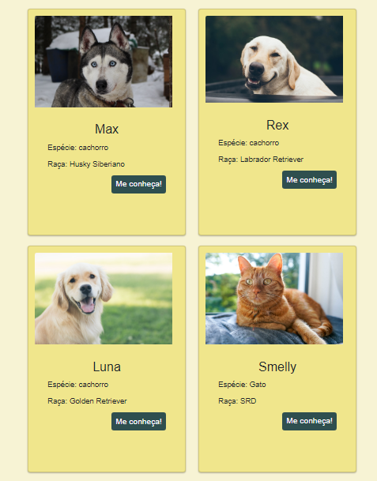
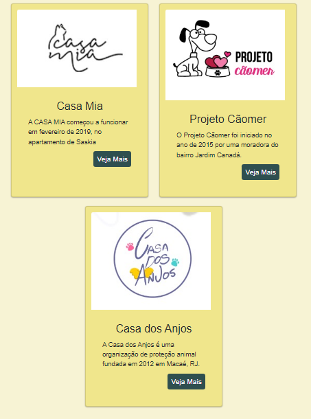
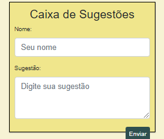
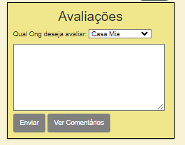
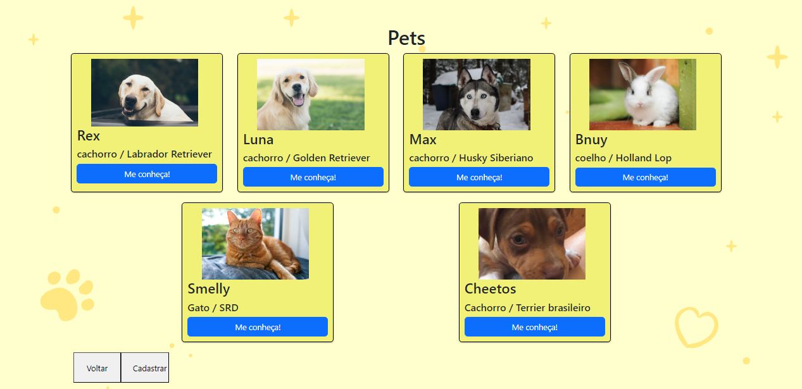
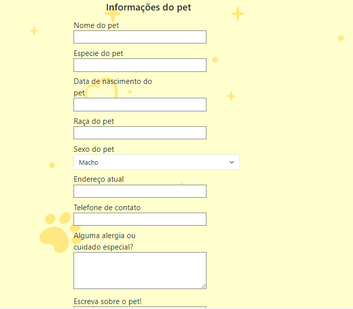
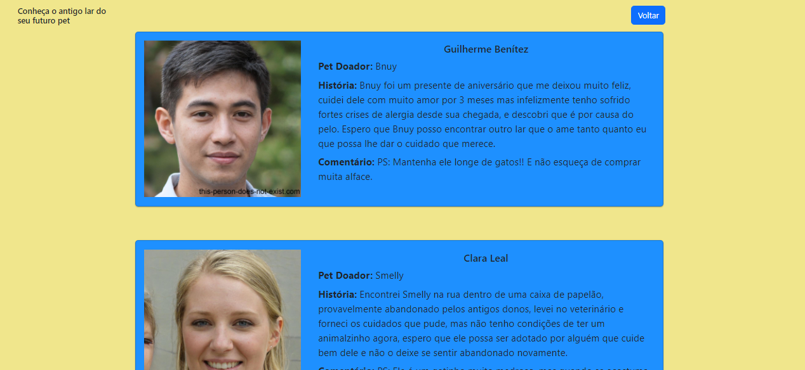
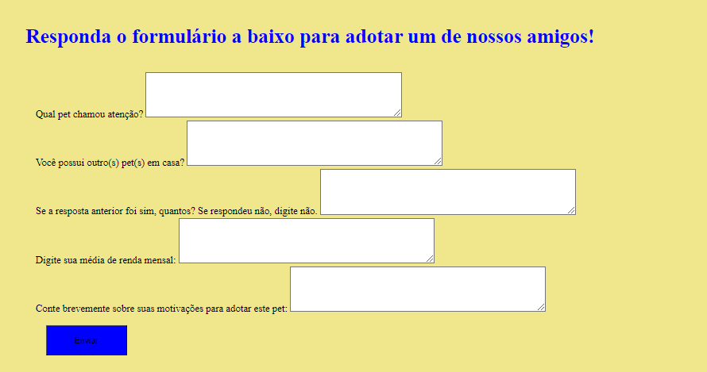
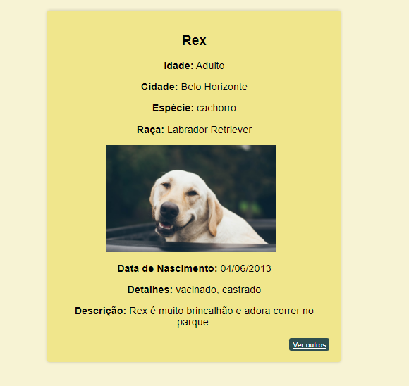

Projeto X
O Idoog é uma plataforma para adoção de pets que facilita o trabalho dos abrigos nos processos necessários, é um software onde os usuários poderão navegar pelos pets disponíveis para adoção, com informações simplificadas sobre saúde, história, etc. Além disso terão acesso aos colaboradores que resgataram e trataram o animal. Para a adoção será necessário um cadastro prévio na plataforma, para que também mantenham contato após a doação com atualizações do animal.
Informações sobre o projeto.
O vídeo a seguir traz uma apresentação do problema que a equipe está tratando e a proposta de solução.
Nesta seção são apresentadas as telas desenvolvidas para cada uma das funcionalidades do sistema
Apresenta fotos de alguns dos animais cadastrados na página principal

Cards com informações dos pets na página principal que são aleatorizados cada vez que a página é recarregada

Cards que apresentam ONGs parceiras do projeto, com um botão que redireciona para os sites respectivos

Caixa de texto para que os usuários deixem comenrários ou reclamações a respeito do projeto.

Caixa de texto para que os usuários avaliem as ONGs e olhem as avaliações que outros deixaram.

Tela de display para todos os pets cadastrados.

Formulário para cadastrar pets no site.

Página que apresenta informações sobre os doadores.

Formulário para que usuários adotem pets.

Página de detalhes e informações extras dos pets cadastrados.

Esta seção traz o detlahamento das estruturas de dados utilizadas na solução. É apresentado um exemplo de registro no formato JSON.
Dados dos Pets utilizados na aplicação
"animal": [ { "id": 1, "nome": "Rex", "idade": "Adulto", "cidade": "Belo Horizonte", "especie": "cachorro", "raça": "Labrador Retriever", "imagem": "assets\\imgs\\labrador.png", "data_nascimento": "04/06/2013", "detalhes": [ "vacinado", "castrado" ], "descrição": "Rex é muito brincalhão e adora correr no parque." }, { "id": 2, "nome": "Luna", "idade": "Adulto", "cidade": "Belo Horizonte", "especie": "cachorro", "raça": "Golden Retriever", "imagem": "assets\\imgs\\golden.png", "data_nascimento": "10/05/2018", "detalhes": [ "vacinado", "castrado" ], "descrição": "Luna é uma cachorra de olhos brilhantes. Ela é muito amigável e adora receber carinho." }, { "id": 3, "nome": "Max", "idade": "Adulto", "cidade": "Belo Horizonte", "especie": "cachorro", "raça": "Husky Siberiano", "imagem": "assets\\imgs\\Husky.png", "data_nascimento": "10/03/2021", "detalhes": [ "vacinado", "castrado" ], "descrição": "Max é um cachorro com pelagem preta e focinho marcante. Ele é inteligente e adora aprender novos truques." }, { "id": 4, "nome": "Bnuy", "idade": "Adulto", "cidade": "Belo Horizonte", "especie": "coelho", "raça": "Holland Lop", "imagem": "assets\\buny.jpg", "data_nascimento": "10/03/2021", "detalhes": [ "vacinado", "castrado" ], "descrição": "Bnuy é um coelho branco de orelhas cinza, ele ama alface e tem medo de gatos" }, { "id": 5, "nome": "Smelly", "idade": "Adulto", "cidade": "Belo Horizonte", "especie": "Gato", "raça": "SRD", "imagem": "assets\\smelly.jpg", "data_nascimento": "21/08/2022", "detalhes": [ "vacinado", "castrado" ], "descrição": "Smelly é um gato laranja que gosta de sair, cuidado, ele não é bom com crianças" }, { "id": 6, "nome": "Cheetos", "idade": "Filhote", "cidade": "Belo Horizonte", "especie": "Cachorro", "raça": "Terrier brasileiro", "imagem": "assets\\cheetos.jpg", "data_nascimento": "17/03/2020", "detalhes": [ "vacinado", "castrado" ], "descrição": "O Cheetos gosta de ficar dentro de casa mas morre de medo de aspirador" } ]
Dados de Doadores utilizados
doador: [ { nome: "Guilherme Benítez", petdoado: "Bnuy", história: "Bnuy foi um presente de aniversário que me deixou muito feliz, cuidei dele com muito amor por 3 meses mas infelizmente tenho sofrido fortes crises de alergia desde sua chegada, e descobri que é por causa do pelo. Espero que Bnuy posso encontrar outro lar que o ame tanto quanto eu que possa lhe dar o cuidado que merece.", comentário: "PS: Mantenha ele longe de gatos!! E não esqueça de comprar muita alface.", img: "assets/imgs/coelho.jpg" }, { nome: "Clara Leal", petdoado: "Smelly", história: "Encontrei Smelly na rua dentro de uma caixa de papelão, provavelmente abandonado pelos antigos donos, levei no veterinário e forneci os cuidados que pude, mas não tenho condições de ter um animalzinho agora, espero que ele possa ser adotado por alguém que cuide bem dele e não o deixe se sentir abandonado novamente.", comentário: "PS: Ele é um gatinho muito medroso, mas quando se acostuma com você é muito carinhoso.", img: "assets/imgs/gato.jpg" }, { nome: "Lucas Araujo", petdoado: "Cheetos", história: "Estou doando esse lindo e amoroso Cãozinho, até hoje criado com muito carinho por mim e minhas filhas, mas infelizmente agora que vivo sozinho não consigo mais lhe dar o cuidado necessário. Ele merece um novo lar que dê a ele a mesma atenção e amor que teve até hoje, onde possa fazer parte de uma família.", comentário: "PS: Ele gosta de carinho na barriga e de passear em parques com muitas árvores.", img: "assets/imgs/cach.jpg" } ]
Dados de ONGs utilizadas
{ image: "assets/imgs/CasaMia.jpg", title: "Casa Mia", description: "A CASA MIA começou a funcionar em fevereiro de 2019, no apartamento de Saskia", button: "Veja Mais", link: "https://casamiabh.com.br", }, { image: "assets/imgs/Caomer.jpg", title: "Projeto Cãomer", description: "O Projeto Cãomer foi iniciado no ano de 2015 por uma moradora do bairro Jardim Canadá.", button: "Veja Mais", link: "https://projetocaomer.com.br/" }, { image: "assets/imgs/Casadosanjos.jpg", title: "Casa dos Anjos", description: "A Casa dos Anjos é uma organização de proteção animal fundada em 2012 em Macaé, RJ.", button: "Veja Mais", link: "https://casadosanjos.netlify.app/", }, ];